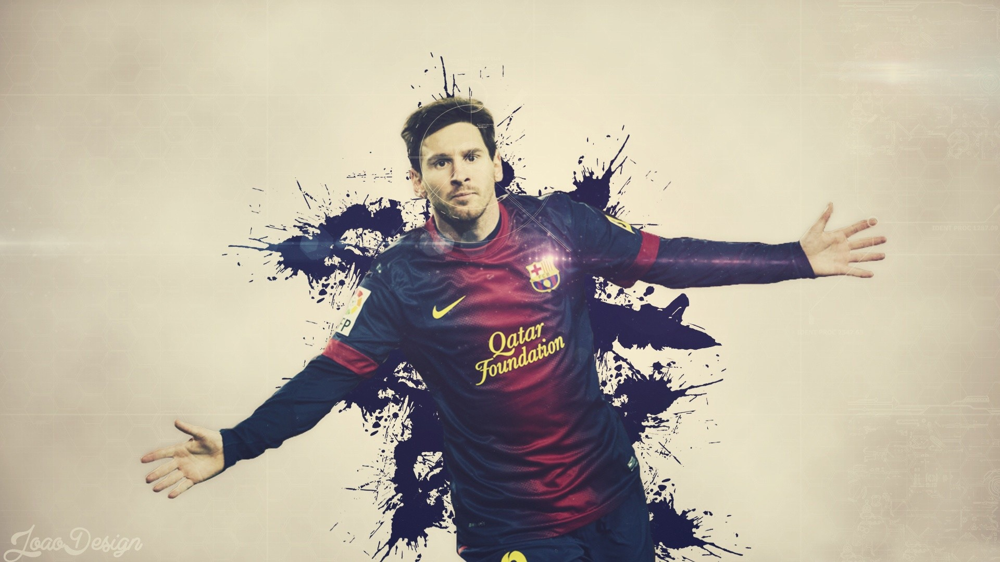

축구(蹴球, 영어: Association football, 일부 국가에서는 Soccer)는 11명의 선수들이 각각 한 팀을 이루어 주로 발을 사용하여 골대에 공을 넣는 구기 단체 스포츠로, 세계적으로 최고의 인기를 누리는 스포츠이다.[1] 경기장은 직사각형이며, 바닥은 천연잔디나 인조잔디 등으로 이뤄져 있다. 경기장 양 끝에 놓인 상대방 골대 안으로 공을 통과시키면 득점이 된다.